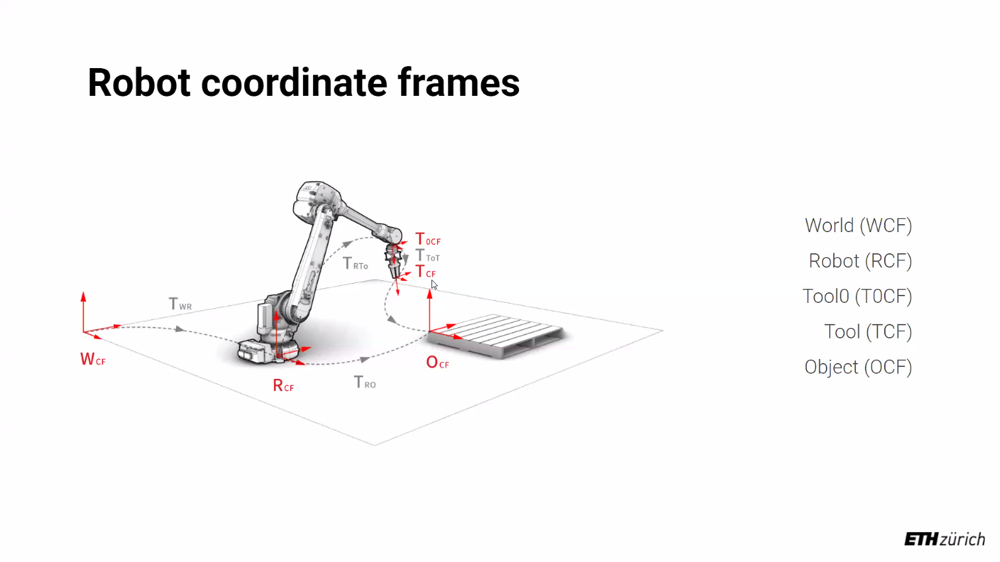
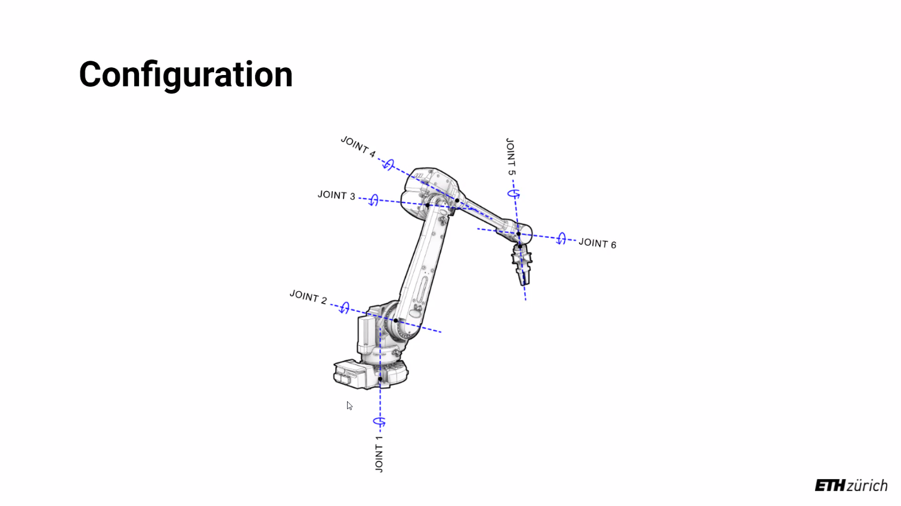
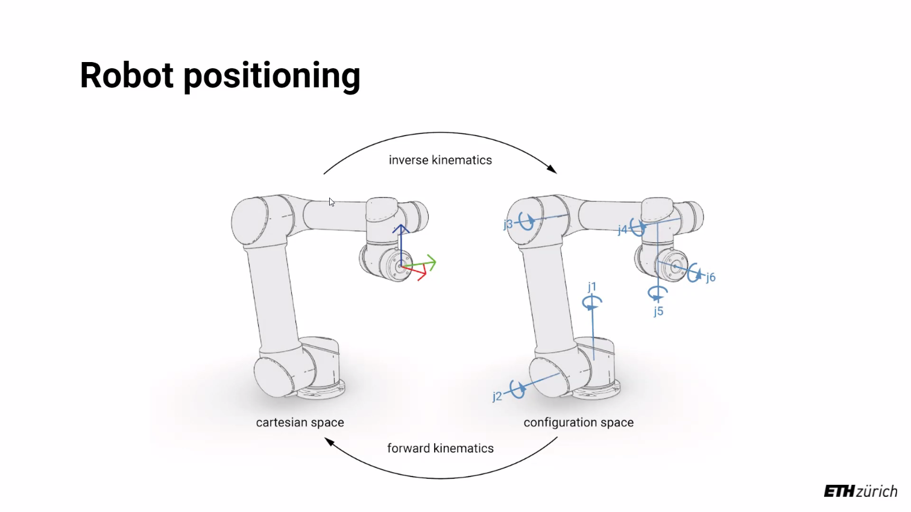
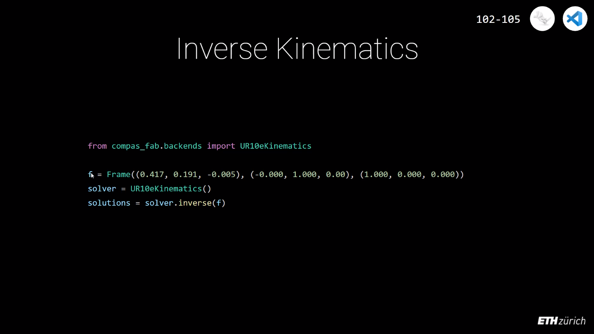

Contents
originFrames =[c.plane_to_compas_frame(p) for p in ps]
ghCanvas = ghenv.Component.OnPingDocument()
folder = os.path.dirname(ghCanvas.FilePath)
with open(os.path.join(folder, 'simple_spheres.json')) as file :
myD = json.load(file)
with open(os.path.join(folder, "myFistItem"), "w") as file:
myJ = json.dump(myJson, file, indent=2)
myList = []
myDict = {}
myDict = dict()
# print(type(myDict))
myList = [1, 2, 3, 4]
myD = {"students": [], "robots": [], "chairs": []}
# myD["laptops"] = True
myD["robots"] = True, "abb", 6 # type: ignore
myD["students"] = "XX", "YY", "ZZ" # type: ignore
for key, value in myD.items():
print(key)
print(value)
# print(myD)
You can only output Dictionary keys, basically.
myD = {"students": [], "robots": [], "chairs": []}
outTemp = myD
# The output is [chairs, students, robots]
Windows PowerShell
版权所有（C） Microsoft Corporation。保留所有权利。
安装最新的 PowerShell，了解新功能和改进！https://aka.ms/PSWindows
PS C:\Users\Zac> pip install cython --install-option="--no-cython-compile"
WARNING: Disabling all use of wheels due to the use of --build-option / --global-option / --install-option.
Collecting cython
Downloading Cython-0.29.32.tar.gz (2.1 MB)
━━━━━━━━━━━━━━━━━━━━━━━━━━━━━━━━━━━━━━━━ 2.1/2.1 MB 6.0 MB/s eta 0:00:00
Preparing metadata (setup.py) ... done
Skipping wheel build for cython, due to binaries being disabled for it.
Installing collected packages: cython
Running setup.py install for cython ... done
Successfully installed cython-0.29.32
[notice] A new release of pip available: 22.2.2 -> 22.3
[notice] To update, run: C:\Users\Zac\AppData\Local\Microsoft\WindowsApps\PythonSoftwareFoundation.Python.3.10_qbz5n2kfra8p0\python.exe -m pip install --upgrade pip
PS C:\Users\Zac> pip install compas
Collecting compas
Downloading COMPAS-1.17.0-py2.py3-none-any.whl (5.2 MB)
━━━━━━━━━━━━━━━━━━━━━━━━━━━━━━━━━━━━━━━━ 5.2/5.2 MB 4.9 MB/s eta 0:00:00
Collecting matplotlib>=3.1
Downloading matplotlib-3.6.1-cp310-cp310-win_amd64.whl (7.2 MB)
━━━━━━━━━━━━━━━━━━━━━━━━━━━━━━━━━━━━━━━━ 7.2/7.2 MB 10.0 MB/s eta 0:00:00
Collecting scipy>=1.1
Downloading scipy-1.9.3-cp310-cp310-win_amd64.whl (40.1 MB)
━━━━━━━━━━━━━━━━━━━━━━━━━━━━━━━━━━━━━━━━ 40.1/40.1 MB 14.5 MB/s eta 0:00:00
Collecting pycollada
Downloading pycollada-0.7.2.tar.gz (107 kB)
━━━━━━━━━━━━━━━━━━━━━━━━━━━━━━━━━━━━━━━━ 107.6/107.6 kB ? eta 0:00:00
Preparing metadata (setup.py) ... done
Collecting typing-extensions
Downloading typing_extensions-4.4.0-py3-none-any.whl (26 kB)
Requirement already satisfied: cython in c:\users\zac\appdata\local\packages\pythonsoftwarefoundation.python.3.10_qbz5n2kfra8p0\localcache\local-packages\python310\site-packages (from compas) (0.29.32)
Collecting watchdog
Downloading watchdog-2.1.9-py3-none-win_amd64.whl (78 kB)
━━━━━━━━━━━━━━━━━━━━━━━━━━━━━━━━━━━━━━━━ 78.4/78.4 kB ? eta 0:00:00
Collecting networkx
Downloading networkx-2.8.7-py3-none-any.whl (2.0 MB)
━━━━━━━━━━━━━━━━━━━━━━━━━━━━━━━━━━━━━━━━ 2.0/2.0 MB 18.5 MB/s eta 0:00:00
Collecting sympy
Downloading sympy-1.11.1-py3-none-any.whl (6.5 MB)
━━━━━━━━━━━━━━━━━━━━━━━━━━━━━━━━━━━━━━━━ 6.5/6.5 MB 15.3 MB/s eta 0:00:00
Collecting imageio>=2.7
Downloading imageio-2.22.2-py3-none-any.whl (3.4 MB)
━━━━━━━━━━━━━━━━━━━━━━━━━━━━━━━━━━━━━━━━ 3.4/3.4 MB 21.5 MB/s eta 0:00:00
Requirement already satisfied: pillow in c:\users\zac\appdata\local\packages\pythonsoftwarefoundation.python.3.10_qbz5n2kfra8p0\localcache\local-packages\python310\site-packages (from compas) (9.2.0)
Collecting schema
Downloading schema-0.7.5-py2.py3-none-any.whl (17 kB)
Requirement already satisfied: numpy>=1.15.4 in c:\users\zac\appdata\local\packages\pythonsoftwarefoundation.python.3.10_qbz5n2kfra8p0\localcache\local-packages\python310\site-packages (from compas) (1.23.4)
Collecting jsonschema
Downloading jsonschema-4.16.0-py3-none-any.whl (83 kB)
━━━━━━━━━━━━━━━━━━━━━━━━━━━━━━━━━━━━━━━━ 83.1/83.1 kB 4.9 MB/s eta 0:00:00
Collecting contourpy>=1.0.1
Downloading contourpy-1.0.5-cp310-cp310-win_amd64.whl (164 kB)
━━━━━━━━━━━━━━━━━━━━━━━━━━━━━━━━━━━━━━━━ 164.1/164.1 kB 9.6 MB/s eta 0:00:00
Collecting cycler>=0.10
Downloading cycler-0.11.0-py3-none-any.whl (6.4 kB)
Collecting kiwisolver>=1.0.1
Downloading kiwisolver-1.4.4-cp310-cp310-win_amd64.whl (55 kB)
━━━━━━━━━━━━━━━━━━━━━━━━━━━━━━━━━━━━━━━━ 55.3/55.3 kB 2.8 MB/s eta 0:00:00
Collecting packaging>=20.0
Using cached packaging-21.3-py3-none-any.whl (40 kB)
Collecting fonttools>=4.22.0
Downloading fonttools-4.38.0-py3-none-any.whl (965 kB)
━━━━━━━━━━━━━━━━━━━━━━━━━━━━━━━━━━━━━━━━ 965.4/965.4 kB 20.3 MB/s eta 0:00:00
Collecting pyparsing>=2.2.1
Using cached pyparsing-3.0.9-py3-none-any.whl (98 kB)
Requirement already satisfied: python-dateutil>=2.7 in c:\users\zac\appdata\local\packages\pythonsoftwarefoundation.python.3.10_qbz5n2kfra8p0\localcache\local-packages\python310\site-packages (from matplotlib>=3.1->compas) (2.8.2)
Collecting attrs>=17.4.0
Using cached attrs-22.1.0-py2.py3-none-any.whl (58 kB)
Collecting pyrsistent!=0.17.0,!=0.17.1,!=0.17.2,>=0.14.0
Downloading pyrsistent-0.18.1-cp310-cp310-win_amd64.whl (61 kB)
━━━━━━━━━━━━━━━━━━━━━━━━━━━━━━━━━━━━━━━━ 61.6/61.6 kB ? eta 0:00:00
Collecting contextlib2>=0.5.5
Downloading contextlib2-21.6.0-py2.py3-none-any.whl (13 kB)
Collecting mpmath>=0.19
Downloading mpmath-1.2.1-py3-none-any.whl (532 kB)
━━━━━━━━━━━━━━━━━━━━━━━━━━━━━━━━━━━━━━━━ 532.6/532.6 kB 32.6 MB/s eta 0:00:00
Requirement already satisfied: six>=1.5 in c:\users\zac\appdata\local\packages\pythonsoftwarefoundation.python.3.10_qbz5n2kfra8p0\localcache\local-packages\python310\site-packages (from python-dateutil>=2.7->matplotlib>=3.1->compas) (1.16.0)
Using legacy 'setup.py install' for pycollada, since package 'wheel' is not installed.
Installing collected packages: mpmath, watchdog, typing-extensions, sympy, scipy, pyrsistent, pyparsing, networkx, kiwisolver, imageio, fonttools, cycler, contourpy, contextlib2, attrs, schema, pycollada, packaging, jsonschema, matplotlib, compas
WARNING: The script watchmedo.exe is installed in 'C:\Users\Zac\AppData\Local\Packages\PythonSoftwareFoundation.Python.3.10_qbz5n2kfra8p0\LocalCache\local-packages\Python310\Scripts' which is not on PATH.
Consider adding this directory to PATH or, if you prefer to suppress this warning, use --no-warn-script-location.
WARNING: The script isympy.exe is installed in 'C:\Users\Zac\AppData\Local\Packages\PythonSoftwareFoundation.Python.3.10_qbz5n2kfra8p0\LocalCache\local-packages\Python310\Scripts' which is not on PATH.
Consider adding this directory to PATH or, if you prefer to suppress this warning, use --no-warn-script-location.
WARNING: The scripts imageio_download_bin.exe and imageio_remove_bin.exe are installed in 'C:\Users\Zac\AppData\Local\Packages\PythonSoftwareFoundation.Python.3.10_qbz5n2kfra8p0\LocalCache\local-packages\Python310\Scripts' which is not on PATH.
Consider adding this directory to PATH or, if you prefer to suppress this warning, use --no-warn-script-location.
WARNING: The scripts fonttools.exe, pyftmerge.exe, pyftsubset.exe and ttx.exe are installed in 'C:\Users\Zac\AppData\Local\Packages\PythonSoftwareFoundation.Python.3.10_qbz5n2kfra8p0\LocalCache\local-packages\Python310\Scripts' which is not on PATH.
Consider adding this directory to PATH or, if you prefer to suppress this warning, use --no-warn-script-location.
Running setup.py install for pycollada ... done
WARNING: The script jsonschema.exe is installed in 'C:\Users\Zac\AppData\Local\Packages\PythonSoftwareFoundation.Python.3.10_qbz5n2kfra8p0\LocalCache\local-packages\Python310\Scripts' which is not on PATH.
Consider adding this directory to PATH or, if you prefer to suppress this warning, use --no-warn-script-location.
WARNING: The script compas_rpc.exe is installed in 'C:\Users\Zac\AppData\Local\Packages\PythonSoftwareFoundation.Python.3.10_qbz5n2kfra8p0\LocalCache\local-packages\Python310\Scripts' which is not on PATH.
Consider adding this directory to PATH or, if you prefer to suppress this warning, use --no-warn-script-location.
Successfully installed attrs-22.1.0 compas-1.17.0 contextlib2-21.6.0 contourpy-1.0.5 cycler-0.11.0 fonttools-4.38.0 imageio-2.22.2 jsonschema-4.16.0 kiwisolver-1.4.4 matplotlib-3.6.1 mpmath-1.2.1 networkx-2.8.7 packaging-21.3 pycollada-0.7.2 pyparsing-3.0.9 pyrsistent-0.18.1 schema-0.7.5 scipy-1.9.3 sympy-1.11.1 typing-extensions-4.4.0 watchdog-2.1.9
[notice] A new release of pip available: 22.2.2 -> 22.3
[notice] To update, run: C:\Users\Zac\AppData\Local\Microsoft\WindowsApps\PythonSoftwareFoundation.Python.3.10_qbz5n2kfra8p0\python.exe -m pip install --upgrade pip
PS C:\Users\Zac>
PS C:\Users\Zac>
PS C:\Users\Zac> cd path/to/compas
cd : 找不到路径“C:\Users\Zac\path\to\compas”，因为该路径不存在。
所在位置 行:1 字符: 1
+ cd path/to/compas
+ ~~~~~~~~~~~~~~~~~
+ CategoryInfo : ObjectNotFound: (C:\Users\Zac\path\to\compas:String) [Set-Location], ItemNotFoundException
+ FullyQualifiedErrorId : PathNotFound,Microsoft.PowerShell.Commands.SetLocationCommand
PS C:\Users\Zac> pip install -e .
Obtaining file:///C:/Users/Zac
ERROR: file:///C:/Users/Zac does not appear to be a Python project: neither 'setup.py' nor 'pyproject.toml' found.
[notice] A new release of pip available: 22.2.2 -> 22.3
[notice] To update, run: C:\Users\Zac\AppData\Local\Microsoft\WindowsApps\PythonSoftwareFoundation.Python.3.10_qbz5n2kfra8p0\python.exe -m pip install --upgrade pip
PS C:\Users\Zac> pip install compas[planarity]
Requirement already satisfied: compas[planarity] in c:\users\zac\appdata\local\packages\pythonsoftwarefoundation.python.3.10_qbz5n2kfra8p0\localcache\local-packages\python310\site-packages (1.17.0)
Requirement already satisfied: jsonschema in c:\users\zac\appdata\local\packages\pythonsoftwarefoundation.python.3.10_qbz5n2kfra8p0\localcache\local-packages\python310\site-packages (from compas[planarity]) (4.16.0)
Requirement already satisfied: watchdog in c:\users\zac\appdata\local\packages\pythonsoftwarefoundation.python.3.10_qbz5n2kfra8p0\localcache\local-packages\python310\site-packages (from compas[planarity]) (2.1.9)
Requirement already satisfied: imageio>=2.7 in c:\users\zac\appdata\local\packages\pythonsoftwarefoundation.python.3.10_qbz5n2kfra8p0\localcache\local-packages\python310\site-packages (from compas[planarity]) (2.22.2)
Requirement already satisfied: networkx in c:\users\zac\appdata\local\packages\pythonsoftwarefoundation.python.3.10_qbz5n2kfra8p0\localcache\local-packages\python310\site-packages (from compas[planarity]) (2.8.7)
Requirement already satisfied: scipy>=1.1 in c:\users\zac\appdata\local\packages\pythonsoftwarefoundation.python.3.10_qbz5n2kfra8p0\localcache\local-packages\python310\site-packages (from compas[planarity]) (1.9.3)
Requirement already satisfied: schema in c:\users\zac\appdata\local\packages\pythonsoftwarefoundation.python.3.10_qbz5n2kfra8p0\localcache\local-packages\python310\site-packages (from compas[planarity]) (0.7.5)
Requirement already satisfied: typing-extensions in c:\users\zac\appdata\local\packages\pythonsoftwarefoundation.python.3.10_qbz5n2kfra8p0\localcache\local-packages\python310\site-packages (from compas[planarity]) (4.4.0)
Requirement already satisfied: pillow in c:\users\zac\appdata\local\packages\pythonsoftwarefoundation.python.3.10_qbz5n2kfra8p0\localcache\local-packages\python310\site-packages (from compas[planarity]) (9.2.0)
Requirement already satisfied: cython in c:\users\zac\appdata\local\packages\pythonsoftwarefoundation.python.3.10_qbz5n2kfra8p0\localcache\local-packages\python310\site-packages (from compas[planarity]) (0.29.32)
Requirement already satisfied: sympy in c:\users\zac\appdata\local\packages\pythonsoftwarefoundation.python.3.10_qbz5n2kfra8p0\localcache\local-packages\python310\site-packages (from compas[planarity]) (1.11.1)
Requirement already satisfied: pycollada in c:\users\zac\appdata\local\packages\pythonsoftwarefoundation.python.3.10_qbz5n2kfra8p0\localcache\local-packages\python310\site-packages (from compas[planarity]) (0.7.2)
Requirement already satisfied: matplotlib>=3.1 in c:\users\zac\appdata\local\packages\pythonsoftwarefoundation.python.3.10_qbz5n2kfra8p0\localcache\local-packages\python310\site-packages (from compas[planarity]) (3.6.1)
Requirement already satisfied: numpy>=1.15.4 in c:\users\zac\appdata\local\packages\pythonsoftwarefoundation.python.3.10_qbz5n2kfra8p0\localcache\local-packages\python310\site-packages (from compas[planarity]) (1.23.4)
Collecting planarity
Downloading planarity-0.4.1.zip (193 kB)
━━━━━━━━━━━━━━━━━━━━━━━━━━━━━━━━━━━━━━━━ 193.2/193.2 kB 1.7 MB/s eta 0:00:00
Preparing metadata (setup.py) ... done
Requirement already satisfied: python-dateutil>=2.7 in c:\users\zac\appdata\local\packages\pythonsoftwarefoundation.python.3.10_qbz5n2kfra8p0\localcache\local-packages\python310\site-packages (from matplotlib>=3.1->compas[planarity]) (2.8.2)
Requirement already satisfied: pyparsing>=2.2.1 in c:\users\zac\appdata\local\packages\pythonsoftwarefoundation.python.3.10_qbz5n2kfra8p0\localcache\local-packages\python310\site-packages (from matplotlib>=3.1->compas[planarity]) (3.0.9)
Requirement already satisfied: fonttools>=4.22.0 in c:\users\zac\appdata\local\packages\pythonsoftwarefoundation.python.3.10_qbz5n2kfra8p0\localcache\local-packages\python310\site-packages (from matplotlib>=3.1->compas[planarity]) (4.38.0)
Requirement already satisfied: kiwisolver>=1.0.1 in c:\users\zac\appdata\local\packages\pythonsoftwarefoundation.python.3.10_qbz5n2kfra8p0\localcache\local-packages\python310\site-packages (from matplotlib>=3.1->compas[planarity]) (1.4.4)
Requirement already satisfied: packaging>=20.0 in c:\users\zac\appdata\local\packages\pythonsoftwarefoundation.python.3.10_qbz5n2kfra8p0\localcache\local-packages\python310\site-packages (from matplotlib>=3.1->compas[planarity]) (21.3)
Requirement already satisfied: contourpy>=1.0.1 in c:\users\zac\appdata\local\packages\pythonsoftwarefoundation.python.3.10_qbz5n2kfra8p0\localcache\local-packages\python310\site-packages (from matplotlib>=3.1->compas[planarity]) (1.0.5)
Requirement already satisfied: cycler>=0.10 in c:\users\zac\appdata\local\packages\pythonsoftwarefoundation.python.3.10_qbz5n2kfra8p0\localcache\local-packages\python310\site-packages (from matplotlib>=3.1->compas[planarity]) (0.11.0)
Requirement already satisfied: attrs>=17.4.0 in c:\users\zac\appdata\local\packages\pythonsoftwarefoundation.python.3.10_qbz5n2kfra8p0\localcache\local-packages\python310\site-packages (from jsonschema->compas[planarity]) (22.1.0)
Requirement already satisfied: pyrsistent!=0.17.0,!=0.17.1,!=0.17.2,>=0.14.0 in c:\users\zac\appdata\local\packages\pythonsoftwarefoundation.python.3.10_qbz5n2kfra8p0\localcache\local-packages\python310\site-packages (from jsonschema->compas[planarity]) (0.18.1)
Requirement already satisfied: setuptools in c:\program files\windowsapps\pythonsoftwarefoundation.python.3.10_3.10.2288.0_x64__qbz5n2kfra8p0\lib\site-packages (from planarity->compas[planarity]) (63.2.0)
Requirement already satisfied: contextlib2>=0.5.5 in c:\users\zac\appdata\local\packages\pythonsoftwarefoundation.python.3.10_qbz5n2kfra8p0\localcache\local-packages\python310\site-packages (from schema->compas[planarity]) (21.6.0)
Requirement already satisfied: mpmath>=0.19 in c:\users\zac\appdata\local\packages\pythonsoftwarefoundation.python.3.10_qbz5n2kfra8p0\localcache\local-packages\python310\site-packages (from sympy->compas[planarity]) (1.2.1)
Requirement already satisfied: six>=1.5 in c:\users\zac\appdata\local\packages\pythonsoftwarefoundation.python.3.10_qbz5n2kfra8p0\localcache\local-packages\python310\site-packages (from python-dateutil>=2.7->matplotlib>=3.1->compas[planarity]) (1.16.0)
Using legacy 'setup.py install' for planarity, since package 'wheel' is not installed.
Installing collected packages: planarity
Running setup.py install for planarity ... error
error: subprocess-exited-with-error
× Running setup.py install for planarity did not run successfully.
│ exit code: 1
╰─> [22 lines of output]
running install
C:\Program Files\WindowsApps\PythonSoftwareFoundation.Python.3.10_3.10.2288.0_x64__qbz5n2kfra8p0\lib\site-packages\setuptools\command\install.py:34: SetuptoolsDeprecationWarning: setup.py install is deprecated. Use build and pip and other standards-based tools.
warnings.warn(
running build
running build_py
creating build
creating build\lib.win-amd64-cpython-310
creating build\lib.win-amd64-cpython-310\planarity
copying planarity\planarity_functions.py -> build\lib.win-amd64-cpython-310\planarity
copying planarity\planarity_networkx.py -> build\lib.win-amd64-cpython-310\planarity
copying planarity\__init__.py -> build\lib.win-amd64-cpython-310\planarity
creating build\lib.win-amd64-cpython-310\planarity\tests
copying planarity\tests\test.py -> build\lib.win-amd64-cpython-310\planarity\tests
copying planarity\tests\test_planarity.py -> build\lib.win-amd64-cpython-310\planarity\tests
copying planarity\tests\test_planarity_networkx.py -> build\lib.win-amd64-cpython-310\planarity\tests
copying planarity\tests\__init__.py -> build\lib.win-amd64-cpython-310\planarity\tests
running build_ext
cythoning planarity/planarity.pyx to planarity\planarity.c
C:\Users\Zac\AppData\Local\Packages\PythonSoftwareFoundation.Python.3.10_qbz5n2kfra8p0\LocalCache\local-packages\Python310\site-packages\Cython\Compiler\Main.py:369: FutureWarning: Cython directive 'language_level' not set, using 2 for now (Py2). This will change in a later release! File: C:\Users\Zac\AppData\Local\Temp\pip-install-lka9qw6g\planarity_72c595de180445349a28375597ae64d9\planarity\planarity.pyx
tree = Parsing.p_module(s, pxd, full_module_name)
building 'planarity.planarity' extension
error: Microsoft Visual C++ 14.0 or greater is required. Get it with "Microsoft C++ Build Tools": https://visualstudio.microsoft.com/visual-cpp-build-tools/
[end of output]
note: This error originates from a subprocess, and is likely not a problem with pip.
error: legacy-install-failure
× Encountered error while trying to install package.
╰─> planarity
note: This is an issue with the package mentioned above, not pip.
hint: See above for output from the failure.
[notice] A new release of pip available: 22.2.2 -> 22.3
[notice] To update, run: C:\Users\Zac\AppData\Local\Microsoft\WindowsApps\PythonSoftwareFoundation.Python.3.10_qbz5n2kfra8p0\python.exe -m pip install --upgrade pip
PS C:\Users\Zac> pip install -e .[planarity]
Obtaining file:///C:/Users/Zac
ERROR: file:///C:/Users/Zac does not appear to be a Python project: neither 'setup.py' nor 'pyproject.toml' found.
[notice] A new release of pip available: 22.2.2 -> 22.3
[notice] To update, run: C:\Users\Zac\AppData\Local\Microsoft\WindowsApps\PythonSoftwareFoundation.Python.3.10_qbz5n2kfra8p0\python.exe -m pip install --upgrade pip
PS C:\Users\Zac>
Windows PowerShell
版权所有（C） Microsoft Corporation。保留所有权利。
安装最新的 PowerShell，了解新功能和改进！https://aka.ms/PSWindows
PS C:\Users\Zac> conda env active
usage: conda-env-script.py [-h] {create,export,list,remove,update,config} ...
conda-env-script.py: error: argument {create,export,list,remove,update,config}: invalid choice: 'active' (choose from 'create', 'export', 'list', 'remove', 'update', 'config')
PS C:\Users\Zac> conda env list
# conda environments:
#
base C:\Users\Zac\anaconda3
PS C:\Users\Zac> conda config --add channels conda-forge
PS C:\Users\Zac> conda env create -f https://dfab.link/intro22.yml
Collecting package metadata (repodata.json): \
PS C:\Users\Zacdone
Solving environment: done
Downloading and Extracting Packages
importlib_resources- | 29 KB | ############################################################################ | 100%
packaging-21.3 | 36 KB | ############################################################################ | 100%
krb5-1.19.3 | 847 KB | ############################################################################ | 100%
zipp-3.9.0 | 13 KB | ############################################################################ | 100%
glib-2.74.0 | 452 KB | ############################################################################ | 100%
pyopengl-3.1.6 | 867 KB | ############################################################################ | 100%
svgwrite-1.4.3 | 52 KB | ############################################################################ | 100%
constantly-15.1.0 | 9 KB | ############################################################################ | 100%
pthread-stubs-0.4 | 6 KB | ############################################################################ | 100%
font-ttf-ubuntu-0.83 | 1.9 MB | ############################################################################ | 100%
libxml2-2.10.3 | 3.6 MB | ############################################################################ | 100%
vs2015_runtime-14.29 | 1.2 MB | ############################################################################ | 100%
fonttools-4.38.0 | 1.7 MB | ############################################################################ | 100%
compas_fab-0.27.0 | 2.9 MB | ############################################################################ | 100%
libwebp-1.2.4 | 76 KB | ############################################################################ | 100%
openssl-1.1.1q | 6.0 MB | ############################################################################ | 100%
jsoncpp-1.9.5 | 532 KB | ############################################################################ | 100%
tk-8.6.12 | 3.5 MB | ############################################################################ | 100%
typing_extensions-4. | 29 KB | ############################################################################ | 100%
pycparser-2.21 | 100 KB | ############################################################################ | 100%
gstreamer-1.20.3 | 2.2 MB | ############################################################################ | 100%
libssh2-1.10.0 | 228 KB | ############################################################################ | 100%
colorama-0.4.5 | 18 KB | ############################################################################ | 100%
vc-14.2 | 14 KB | ############################################################################ | 100%
lz4-c-1.9.3 | 135 KB | ############################################################################ | 100%
compas_occ-0.6.0 | 32 KB | ############################################################################ | 100%
tbb-devel-2021.6.0 | 1.1 MB | ############################################################################ | 100%
bcrypt-3.2.2 | 41 KB | ############################################################################ | 100%
zstd-1.5.2 | 401 KB | ############################################################################ | 100%
hdf5-1.12.2 | 24.0 MB | ############################################################################ | 100%
appdirs-1.4.4 | 13 KB | ############################################################################ | 100%
brotli-1.0.9 | 18 KB | ############################################################################ | 100%
python-3.9.13 | 17.9 MB | ############################################################################ | 100%
libtiff-4.4.0 | 1.1 MB | ############################################################################ | 100%
pkgutil-resolve-name | 9 KB | ############################################################################ | 100%
font-ttf-source-code | 684 KB | ############################################################################ | 100%
m2w64-gcc-libgfortra | 342 KB | ############################################################################ | 100%
pip-22.3 | 1.5 MB | ############################################################################ | 100%
pyparsing-3.0.9 | 79 KB | ############################################################################ | 100%
icu-70.1 | 17.0 MB | ############################################################################ | 100%
mpmath-1.2.1 | 437 KB | ############################################################################ | 100%
freeimage-3.18.0 | 689 KB | ############################################################################ | 100%
lcms2-2.12 | 882 KB | ############################################################################ | 100%
win32_setctime-1.1.0 | 7 KB | ############################################################################ | 100%
fonts-conda-ecosyste | 4 KB | ############################################################################ | 100%
imageio-2.22.0 | 3.2 MB | ############################################################################ | 100%
libiconv-1.17 | 698 KB | ############################################################################ | 100%
python_abi-3.9 | 4 KB | ############################################################################ | 100%
cython-0.29.32 | 1.9 MB | ############################################################################ | 100%
pugixml-1.11.4 | 211 KB | ############################################################################ | 100%
font-ttf-dejavu-sans | 388 KB | ############################################################################ | 100%
x265-3.5 | 5.3 MB | ############################################################################ | 100%
unicodedata2-14.0.0 | 492 KB | ############################################################################ | 100%
libpng-1.6.38 | 773 KB | ############################################################################ | 100%
autobahn-22.7.1 | 381 KB | ############################################################################ | 100%
libraw-0.20.2 | 1.0 MB | ############################################################################ | 100%
zope.interface-5.5.0 | 319 KB | ############################################################################ | 100%
pythonocc-core-7.6.2 | 38.5 MB | ############################################################################ | 100%
m2w64-gmp-6.1.0 | 726 KB | ############################################################################ | 100%
contourpy-1.0.5 | 173 KB | ############################################################################ | 100%
munkres-1.1.4 | 12 KB | ############################################################################ | 100%
libvorbis-1.3.7 | 267 KB | ############################################################################ | 100%
ffmpeg-4.4.2 | 12.7 MB | ############################################################################ | 100%
expat-2.4.9 | 387 KB | ############################################################################ | 100%
mpfr-4.1.0 | 450 KB | ############################################################################ | 100%
twisted-iocpsupport- | 44 KB | ############################################################################ | 100%
zlib-1.2.13 | 113 KB | ############################################################################ | 100%
bzip2-1.0.8 | 149 KB | ############################################################################ | 100%
compas_rrc-1.1.0 | 17 KB | ############################################################################ | 100%
msys2-conda-epoch-20 | 3 KB | ############################################################################ | 100%
aom-3.5.0 | 11.7 MB | ############################################################################ | 100%
kiwisolver-1.4.4 | 61 KB | ############################################################################ | 100%
cffi-1.15.1 | 229 KB | ############################################################################ | 100%
qt-webengine-5.15.4 | 60.1 MB | ############################################################################ | 100%
gettext-0.21.1 | 5.3 MB | ################################################################################################################ | 100%
nptyping-2.3.1 | 21 KB | ################################################################################################################ | 100%
pycollada-0.7.2 | 84 KB | ################################################################################################################ | 100%
pyasn1-modules-0.2.7 | 60 KB | ################################################################################################################ | 100%
tzdata-2022e | 118 KB | ################################################################################################################ | 100%
hyperlink-21.0.0 | 71 KB | ################################################################################################################ | 100%
openh264-2.3.1 | 727 KB | ################################################################################################################ | 100%
pyyaml-6.0 | 154 KB | ################################################################################################################ | 100%
certifi-2022.9.24 | 155 KB | ################################################################################################################ | 100%
pyopenssl-22.1.0 | 122 KB | ################################################################################################################ | 100%
utfcpp-3.2.1 | 11 KB | ################################################################################################################ | 100%
ucrt-10.0.20348.0 | 1.2 MB | ################################################################################################################ | 100%
jpeg-9e | 366 KB | ################################################################################################################ | 100%
roslibpy-1.3.0 | 32 KB | ################################################################################################################ | 100%
boost-cpp-1.78.0 | 17.1 MB | ################################################################################################################ | 100%
libsqlite-3.39.4 | 642 KB | ################################################################################################################ | 100%
m2w64-gcc-libs-5.3.0 | 520 KB | ################################################################################################################ | 100%
lerc-4.0.0 | 190 KB | ################################################################################################################ | 100%
pyserial-3.5 | 64 KB | ################################################################################################################ | 100%
typing-extensions-4. | 8 KB | ################################################################################################################ | 100%
rapidjson-1.1.0 | 104 KB | ################################################################################################################ | 100%
intel-openmp-2022.1. | 3.7 MB | ################################################################################################################ | 100%
qtpy-2.2.1 | 49 KB | ################################################################################################################ | 100%
m2w64-gcc-libs-core- | 214 KB | ################################################################################################################ | 100%
libwebp-base-1.2.4 | 328 KB | ################################################################################################################ | 100%
libbrotlienc-1.0.9 | 716 KB | ################################################################################################################ | 100%
ca-certificates-2022 | 189 KB | ################################################################################################################ | 100%
liblapack-3.9.0 | 5.6 MB | ################################################################################################################ | 100%
networkx-2.8.7 | 1.6 MB | ################################################################################################################ | 100%
pillow-9.2.0 | 45.2 MB | ################################################################################################################ | 100%
glew-2.1.0 | 941 KB | ################################################################################################################ | 100%
libblas-3.9.0 | 5.6 MB | ################################################################################################################ | 100%
pcre2-10.37 | 942 KB | ################################################################################################################ | 100%
importlib-metadata-4 | 33 KB | ################################################################################################################ | 100%
git-2.38.1 | 105.9 MB | ################################################################################################################ | 100%
service_identity-18. | 12 KB | ################################################################################################################ | 100%
libxcb-1.13 | 1.3 MB | ################################################################################################################ | 100%
libogg-1.3.4 | 34 KB | ################################################################################################################ | 100%
qt-main-5.15.6 | 68.8 MB | ################################################################################################################ | 100%
idna-3.4 | 55 KB | ################################################################################################################ | 100%
freetype-py-2.3.0 | 58 KB | ################################################################################################################ | 100%
textdistance-4.5.0 | 28 KB | ################################################################################################################ | 100%
occt-7.6.2 | 27.5 MB | ################################################################################################################ | 100%
bullet-cpp-3.21 | 20.7 MB | ################################################################################################################ | 100%
openexr-3.1.5 | 1.4 MB | ################################################################################################################ | 100%
mpir-3.0.0 | 3.0 MB | ################################################################################################################ | 100%
watchdog-2.1.9 | 116 KB | ################################################################################################################ | 100%
xz-5.2.6 | 213 KB | ################################################################################################################ | 100%
imath-3.1.5 | 178 KB | ################################################################################################################ | 100%
libbrotlicommon-1.0. | 67 KB | ################################################################################################################ | 100%
attrs-22.1.0 | 48 KB | ################################################################################################################ | 100%
brotli-bin-1.0.9 | 21 KB | ################################################################################################################ | 100%
xorg-libxau-1.0.9 | 57 KB | ################################################################################################################ | 100%
cryptography-38.0.2 | 1.1 MB | ################################################################################################################ | 100%
m2w64-libwinpthread- | 31 KB | ################################################################################################################ | 100%
gst-plugins-base-1.2 | 2.4 MB | ################################################################################################################ | 100%
pyrsistent-0.18.1 | 85 KB | ################################################################################################################ | 100%
compas_cgal-0.5.0 | 596 KB | ################################################################################################################ | 100%
wheel-0.37.1 | 31 KB | ################################################################################################################ | 100%
vtk-9.1.0 | 33.2 MB | ################################################################################################################ | 100%
libcblas-3.9.0 | 5.6 MB | ################################################################################################################ | 100%
double-conversion-3. | 72 KB | ################################################################################################################ | 100%
compas-1.17.0 | 4.9 MB | ################################################################################################################ | 100%
jxrlib-1.1 | 620 KB | ################################################################################################################ | 100%
scipy-1.9.3 | 28.3 MB | ################################################################################################################ | 100%
mkl-2022.1.0 | 182.7 MB | ################################################################################################################ | 100%
incremental-22.10.0 | 18 KB | ################################################################################################################ | 100%
pyside2-5.15.6 | 10.1 MB | ################################################################################################################ | 100%
libtheora-1.1.1 | 201 KB | ################################################################################################################ | 100%
fontconfig-2.14.1 | 208 KB | ################################################################################################################ | 100%
txaio-21.2.1 | 21 KB | ################################################################################################################ | 100%
openjpeg-2.5.0 | 256 KB | ################################################################################################################ | 100%
jsonschema-4.16.0 | 65 KB | ################################################################################################################ | 100%
schema-0.7.5 | 19 KB | ################################################################################################################ | 100%
sqlite-3.39.4 | 658 KB | ################################################################################################################ | 100%
libzip-1.9.2 | 145 KB | ################################################################################################################ | 100%
svt-av1-1.3.0 | 3.1 MB | ################################################################################################################ | 100%
twisted-22.8.0 | 5.2 MB | ################################################################################################################ | 100%
tbb-2021.6.0 | 174 KB | ################################################################################################################ | 100%
numpy-1.23.4 | 6.3 MB | ################################################################################################################ | 100%
pyasn1-0.4.8 | 53 KB | ################################################################################################################ | 100%
six-1.16.0 | 14 KB | ################################################################################################################ | 100%
done
Installing pip dependencies: | Ran pip subprocess with arguments:
['C:\\Users\\Zac\\anaconda3\\envs\\intro22\\python.exe', '-m', 'pip', 'install', '-U', '-r', 'C:\\Users\\Zac\\AppData\\Local\\Temp\\condaenv.kx68zg2y.requirements.txt']
Pip subprocess output:
Collecting black
Downloading black-22.10.0-cp39-cp39-win_amd64.whl (1.2 MB)
---------------------------------------- 1.2/1.2 MB 5.8 MB/s eta 0:00:00
Collecting mypy-extensions>=0.4.3
Using cached mypy_extensions-0.4.3-py2.py3-none-any.whl (4.5 kB)
Collecting platformdirs>=2
Using cached platformdirs-2.5.2-py3-none-any.whl (14 kB)
Collecting pathspec>=0.9.0
Using cached pathspec-0.10.1-py3-none-any.whl (27 kB)
Collecting click>=8.0.0
Using cached click-8.1.3-py3-none-any.whl (96 kB)
Requirement already satisfied: typing-extensions>=3.10.0.0 in c:\users\zac\anaconda3\envs\intro22\lib\site-packages (from black->-r C:\Users\Zac\AppData\Local\Temp\condaenv.kx68zg2y.requirements.txt (line 1)) (4.4.0)
Collecting tomli>=1.1.0
Using cached tomli-2.0.1-py3-none-any.whl (12 kB)
Requirement already satisfied: colorama in c:\users\zac\anaconda3\envs\intro22\lib\site-packages (from click>=8.0.0->black->-r C:\Users\Zac\AppData\Local\Temp\condaenv.kx68zg2y.requirements.txt (line 1)) (0.4.5)
Installing collected packages: mypy-extensions, tomli, platformdirs, pathspec, click, black
Successfully installed black-22.10.0 click-8.1.3 mypy-extensions-0.4.3 pathspec-0.10.1 platformdirs-2.5.2 tomli-2.0.1
done
#
# To activate this environment, use
#
# $ conda activate intro22
#
# To deactivate an active environment, use
#
# $ conda deactivate
Retrieving notices: ...working... done
   
--- Growing, Growing, Brighter Everyday ! ---